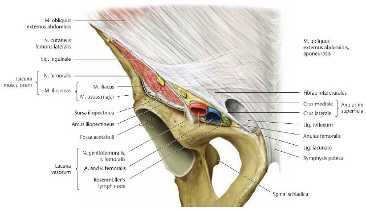
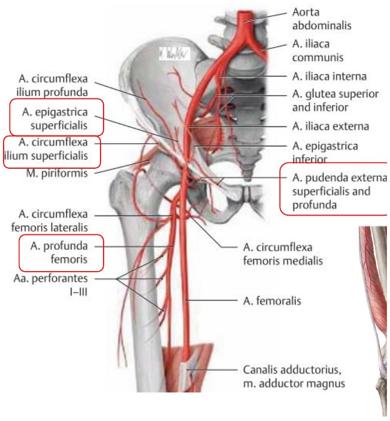
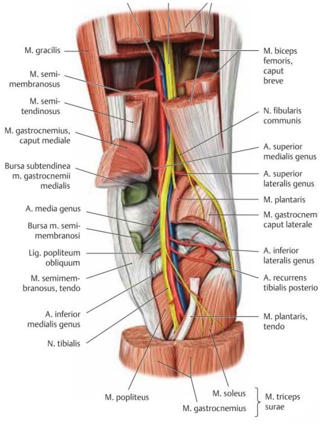
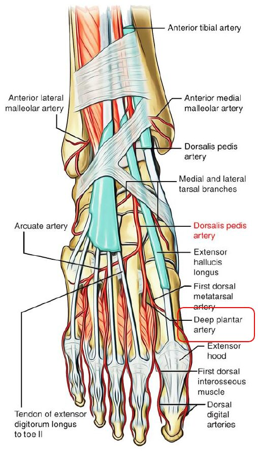
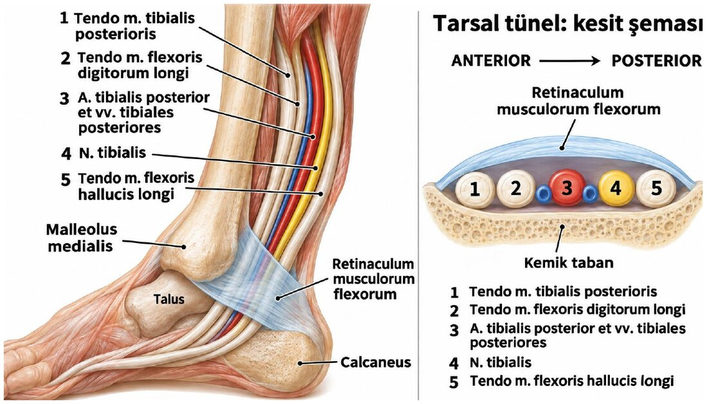

Bölüm 7 · Arteriae membri inferioris
Alt ekstremite arterlerinden gelen sorular "hangisi şu arterin dalı değildir" ya da "hangisi uyluğun ve femurun beslenmesine katılmaz" biçimindedir. Ayırt edici olan, dalın hangi segmentten çıktığıdır: a. femoralis mi, a. profunda femoris mi, a. poplitea mı, bacak arterleri mi. Nabız noktaları da iki kaynakta soruldu. Bu bölüm ana arteri yukarıdan aşağıya izler ve her segmentin dallarını ayrı ayrı verir. Ad değişimlerinin özeti Şekil 2.1'dedir.
A. iliaca externa lig. inguinale'nin arkasında, lacuna vasorum'dan geçince a. femoralis adını alır (Bölüm 5.3). Yüzeydeki yeri SİAS ile symphysis pubica arasının orta noktasıdır (midinguinal nokta). A. femoralis trigonum femorale'de aşağı ve mediale uzanır. Uyluğun ortasında m. sartorius'un derininde canalis adductorius'a girer. M. adductor magnus'taki hiatus adductorius'u geçince a. poplitea adını alır.
Trigonum femoralenin üst sınırı lig. inguinale, lateral sınırı m. sartorius'un medial kenarı, medial sınırı m. adductor longus'un medial kenarıdır. Tabanını m. iliopsoas ve m. pectineus, tavanını fascia lata oluşturur. Lig. inguinale düzeyinde lateralden mediale sıralama n. femoralis, a. femoralis, v. femoralis ve canalis femoralis'tir. N. femoralis femoral kılıfın dışındadır. Vagina femoralis (femoral kılıf) arter ve venin proksimal bölümlerini sarar. Ön duvarı fascia transversalis'in, arka duvarı fascia iliaca'nın devamıdır. Kılıfın lateral bölümünde arter, orta bölümünde ven, medial bölümünde lenfatikleri ve gevşek bağ dokusunu içeren canalis femoralis bulunur. Kanalın girişi olan anulus femoralis'i önde lig. inguinale, medialde lig. lacunare, arkada lig. pectineale, lateralde v. femoralis sınırlar. Femoral herni bu kanaldan, v. femoralis'in medialinden geçer.

Klinik önemi. Arter bu bölgede yüzeyel olduğu için femoral nabız buradan alınır ve anjiyografi için damara buradan girilir. Giriş lig. inguinale'nin hemen altında yapılır, çünkü işlem sonunda arter femur başına bastırılarak kanama kontrol edilebilir. Daha proksimal giriş a. iliaca externa'ya ulaşır ve bu düzeydeki kanamaya dıştan bası uygulanamaz.

A. femoralis'in dalları dört gruptur:
Dizin çevresindeki arterlerin çoğu a. poplitea'dan çıkar: a. superior medialis ve lateralis genus, a. inferior medialis ve lateralis genus ve a. media genus. A. femoralis'ten dize giden tek dal a. descendens genus'tur. Bu yüzden "a. femoralis'in dallarından değildir" sorusunun cevabı a. media genus'tur (Derleme S47). Aynı soruda verilen a. circumflexa ilium superficialis, a. pudenda externa, a. profunda femoris ve a. descendens genus a. femoralis'in dallarıdır.
A. profunda femoris a. femoralis'in proksimal bölümünün posterolateralinden çıkar. Derine ilerler ve m. adductor longus'un arkasında aşağı uzanır. Uyluk kaslarının büyük bölümünü, özellikle adduktor ve arka kas gruplarını besler. Uyluğun asıl kas arteridir. Dalları:
Caput femoris'in kanlanması. Erişkinde başlıca kaynak a. circumflexa femoris medialis'in retinaküler dallarıdır. A. circumflexa femoris lateralis ve çevre anastomozlar ek katkı sağlar. Lig. capitis femoris içindeki arter genellikle a. obturatoria'nın asetabular dalıdır ve erişkinde katkısı sınırlıdır. Yer değiştirmiş intrakapsüler collum femoris kırığı retinaküler damarları koparır ve caput femoris'te avasküler nekroz (osteonekroz) riski doğurur.
Kalça çevresi anastomozları. Trokanterik anastomoz a. glutea superior'un derin dalı ile iki circumflex femoral arterin r. ascendens'leri arasında, çapraz (cruciate) anastomoz a. glutea inferior, iki circumflex arterin r. transversus'ları ve ilk perforan arterin r. ascendens'i arasında oluşur. Bu bağlantılar a. iliaca interna ile a. profunda femoris sistemleri arasında kollateral yol sağlar, ama akut ana damar tıkanmasında yeterli akımı her zaman sağlayamaz.
2024-2025 sınavında uyluğun ve femurun beslenmesi iki ayrı soruda soruldu. Uyluğu besleyen arterler: a. femoralis ve yüzeyel dalları, a. profunda femoris ve circumflex dalları, aa. perforantes, adduktor kasları besleyen a. obturatoria (Bölüm 5.2), uyluğun arkasına giden a. glutea inferior ve dizin üstünde vastus medialis ile diz eklemine giden a. descendens genus. A. recurrens tibialis anterior ise bacakta a. tibialis anterior'dan çıkar ve yukarı dönerek diz eklemi ağına katılır. Uyluğa ve femur cismine ulaşmaz. Her iki sorunun anatomik cevabı bu arterdir (anahtar tartışması Soru 3'te).
Canalis adductorius (Hunter kanalı) trigonum femorale'nin tepesinden hiatus adductorius'a uzanır. Anterolateral duvarı m. vastus medialis, arka duvarı proksimalde m. adductor longus, distalde m. adductor magnus, tavanı membrana vastoadductoria ve üzerindeki m. sartorius'tur. İçinde femoral damarlar ve n. saphenus bulunur. Hiatus adductorius'tan yalnızca a. ve v. femoralis geçer. N. saphenus hiatustan geçmez, kanalın tavanını delerek yüzeyelleşir.
Fossa popliteanın üst-dış sınırı m. biceps femoris, üst-iç sınırı m. semimembranosus ve m. semitendinosus, alt sınırları m. gastrocnemius'un iki başıdır. Tabanını femurun facies poplitea'sı, eklem kapsülü ve m. popliteus oluşturur. A. poplitea hiatus adductorius'tan sonra fossa'nın derininde iner ve genellikle m. popliteus'un alt kenarı düzeyinde tibial arterlere ayrılır.
Komşulukları. Arkadan, yani yüzeyelden derine doğru sıralama n. tibialis, v. poplitea, a. poplitea'dır. Arter en derindedir ve önünde femur, diz eklemi kapsülü ve m. popliteus bulunur. N. fibularis communis fossa'nın lateral kenarında m. biceps femoris tendonu boyunca ilerler. Derin yerleşimi popliteal nabzın palpasyonunu güçleştirir: nabız diz hafif fleksiyondayken fossa'nın derininden alınır. Arter kapsüle yakın ve proksimal ile distal geçişlerinde sabitlendiği için diz çıkığında gerilir ya da yırtılır. Distal nabız alınsa bile popliteal arter yaralanması dışlanamaz.

Dalları. Üst geniküler arterler (a. superior medialis genus ve a. superior lateralis genus), alt geniküler arterler (a. inferior medialis genus ve a. inferior lateralis genus, 2025-2026 uygulamasında gösterildi), eklem kapsülünü delerek çapraz bağlara ve sinoviyal yapılara giden a. media genus ve gastrocnemius, soleus ve plantaris'i besleyen aa. surales. Dizin çevresinde derinde rete articulare genus, yüzeyelde rete patellare bulunur. Rete articulare genus'a beş geniküler arterin dördü (a. media genus eklem içine gider), a. descendens genus, a. circumflexa femoris lateralis'in r. descendens'i, a. recurrens tibialis anterior, a. recurrens tibialis posterior ve r. circumflexus fibularis katılır.
Klasik anlatımda a. poplitea'nın uç dalları a. tibialis anterior ve a. tibialis posterior'dur. Klinik görüntülemede a. tibialis anterior ayrıldıktan sonra kalan kısa ortak bölüme truncus tibiofibularis denir. Bu gövde a. tibialis posterior ve a. fibularis'e ayrılır.
| Arter | Seyir | Önemli dalları ve devamı |
|---|---|---|
| A. tibialis anterior | Membrana interossea'nın üst açıklığından ön kompartımana geçer. N. fibularis profundus ile birlikte membranın önünde, ekstensor kasların derininde iner. Distalde m. extensor hallucis longus tendonu önünden mediale geçer. | A. recurrens tibialis anterior (diz ağı), malleolar dallar. Ayak bileği eklemi düzeyinde a. dorsalis pedis olur. |
| A. dorsalis pedis | Ayak sırtında m. extensor hallucis longus tendonunun lateralinde ilerler, 1. intermetatarsal aralığın proksimaline ulaşır. | Aa. tarsales, a. arcuata (aa. metatarsales dorsales II-IV), a. metatarsalis dorsalis I, a. plantaris profunda (1. dorsal interosseöz kası delerek tabana geçer). |
| A. tibialis posterior | M. soleus'un derininde, derin arka kompartımanda iner. Malleolus medialis'in arkasından retinaculum flexorum'un altına (tarsal tünel) girer. | A. fibularis (en büyük yan dal), r. circumflexus fibularis, a. nutricia tibiae, rr. malleolares mediales ve calcanei. Uç dalları a. plantaris medialis (ince) ve a. plantaris lateralis (kalın). |
| A. fibularis (peronea) | Derin arka kompartımanda fibulanın medial kenarı boyunca, m. tibialis posterior ile m. flexor hallucis longus arasında iner. | Fibulaya besleyici dal, lateral kompartımana perforan kas dalları, r. perforans (membranı geçer), rr. malleolares laterales ve calcanei. |


Tarsal tünelde malleolus medialis'in arkasında önden arkaya sıralama şudur: m. tibialis posterior tendonu, m. flexor digitorum longus tendonu, posterior tibial damarlar, n. tibialis, m. flexor hallucis longus tendonu. Tünelde n. tibialis'e bası tabanda duyu yakınmalarına yol açar. Arcus plantaris a. plantaris lateralis'in derin devamı ile a. dorsalis pedis'ten gelen a. plantaris profunda'nın birleşmesiyle, metatars tabanları düzeyinde m. adductor hallucis'in caput obliquum'unun derininde oluşur. Aa. metatarsales plantares ve rr. perforantes verir. A. plantaris profunda dorsal ve plantar sistemi birleştirir.
| Nabız | Nereden alınır? |
|---|---|
| A. femoralis | Lig. inguinale'nin hemen distalinde, SİAS ile symphysis pubica arasındaki orta nokta hizasında (lig. inguinale'nin 2-3 cm aşağısı) |
| A. poplitea | Diz hafif fleksiyondayken fossa poplitea'nın derininden |
| A. tibialis posterior | Malleolus medialis'in arkasında, tendo calcaneus ile arasındaki olukta |
| A. dorsalis pedis | Ayak sırtında m. extensor hallucis longus tendonunun hemen lateralinde, 1. metatarsal aralığın proksimalinde |
A. dorsalis pedis nabzının 4. metatarsal aralıktan alındığını söyleyen ifade yanlıştır (Derleme S67). Ayrıca bu arterin seyri ve a. arcuata'nın gelişimi değişkendir. Sağlıklı kişilerin bir bölümünde dorsalis pedis nabzı alınamaz. Klinik önemi. Yürümekle başlayan ve dinlenince geçen baldır ağrısı (kladikasyon) egzersizde baldır kaslarının kan gereksiniminin karşılanamadığını gösterir. Femoral nabız alınıp dorsalis pedis ve tibialis posterior nabızları zayıfsa darlık femoropopliteal segmentte olabilir. Ağrının yeri tıkanıklığın düzeyini tek başına göstermez, darlık daha proksimalde olabilir.
Doğru: E. A. media genus a. poplitea'nın dalıdır. Diz eklem kapsülünü delerek çapraz bağlara ve sinoviyal yapılara gider.
A ve B yanlış: a. circumflexa ilium superficialis ve aa. pudendae externae a. femoralis'in yüzeyel dallarıdır. C yanlış: a. profunda femoris a. femoralis'in en büyük dalıdır. D yanlış: a. descendens genus canalis adductorius'un distalinde a. femoralis'ten çıkar.
Doğru: C. A. dorsalis pedis ayak sırtında m. extensor hallucis longus tendonunun hemen lateralinde, 1. metatarsal aralığın proksimalinde palpe edilir. 4. aralık çok laterale düşer.
A doğrudur: popliteal nabız diz hafif fleksiyondayken derinden alınır. B doğrudur: radial nabız el bileğinde bu iki tendon arasındadır. D doğrudur: femoral nabız lig. inguinale'nin hemen distalinde, midinguinal noktada alınır. E doğrudur: posterior tibial nabız malleolus medialis ile tendo calcaneus arasındaki oluktadır.
Doğru: E (öğrenci anahtarı: C). A. recurrens tibialis anterior bacakta a. tibialis anterior'dan çıkar, yukarı dönerek diz ekleminin ön yüzündeki arter ağına katılır. Uyluk dokularına ulaşmaz. Aynı sınavın "femuru besleyen dallardan değildir" sorusunun cevabı da bu arterdir (Soru 4).
A yanlış: a. profunda femoris uyluğun asıl kas arteridir. B yanlış: aa. perforantes uyluğun arka kaslarını besler. C yanlış: sunuma göre a. obturatoria canalis obturatorius'tan uyluğun medial bölümüne geçer ve mm. adductores ile kalça eklemini besler. Rolü vardır. D yanlış: a. descendens genus uyluğun distalinde m. vastus medialis çevresine ve diz eklemine dal verir.
Anahtar notu: öğrenci kaydı cevabı "3) a. obturatoria" olarak vermiştir. Bu, sorunun "pelvisten çıkan arter hangisidir" gibi farklı bir biçimde hatırlanmasından ya da kayıt hatasından kaynaklanmış olabilir. Sunumdaki bilgiyle tutarlı cevap E'dir. Sınavda bu soru gelirse önce kökü dikkatle okuyun: "uyluk" soruluyorsa a. recurrens tibialis anterior uyluğa ulaşmayan tek seçenektir.
Doğru: D. A. recurrens tibialis anterior bacaktan dize çıkar. Femura ulaşmaz.
A ve B yanlış: femurun besleyici arteri (a. nutricia femoris) genellikle a. profunda femoris'in perforan dallarından çıkar. C yanlış: a. circumflexa femoris medialis retinaküler dallarıyla collum ve caput femoris'i besler. E yanlış: a. circumflexa femoris lateralis'in r. transversus'u femurun proksimal bölümünü dolanır, r. ascendens'i trokanter bölgesine gider.
Not: kayıtta yalnızca cevap ("a. recurrens tibialis") yazılıdır. Diğer şıklar tamamlanmıştır.
Doğru: A. Lateralden mediale sıralama sinir, arter, ven, kanaldır. N. femoralis femoral kılıfın dışında, arter kılıfın lateral, ven orta, canalis femoralis medial bölümündedir.
B yanlış: sinir arterin lateralindedir. C yanlış: bu sıralama medialden laterale doğrudur. D yanlış: ven arterin medialindedir. E yanlış: arter ile ven yer değiştirmiştir. Klinik sonucu da yanlış olur: femoral ponksiyonda ven arterin medialinde aranır.
Doğru: B. N. tibialis en yüzeyeldedir, altında v. poplitea, en derinde femur ve eklem kapsülüne komşu a. poplitea bulunur.
A yanlış: bu derinden yüzeyele sıralamadır. C ve E yanlış: arter en derindedir, sinir en yüzeyelde. D yanlış: n. fibularis communis fossa'nın lateral kenarında, m. biceps femoris tendonu boyunca ilerler ve merkezdeki damar-sinir paketinin parçası değildir.
Doğru: D. Erişkinde caput femoris'in başlıca kaynağı a. circumflexa femoris medialis'in collum boyunca yükselen retinaküler dallarıdır. Yer değiştirmiş intrakapsüler kırık bu dalları koparır.
A yanlış: lig. capitis femoris arteri erişkinde sınırlı katkı sağlar. B yanlış: lateral circumflex arter ek katkı yapar ama başlıca kaynak değildir. C yanlış: a. glutea inferior çapraz anastomoza katılır, caput femoris'e retinaküler dal vermez. E yanlış: perforan arterler uyluğun arka kaslarını ve femur cismini besler.
Doğru: C. A. tibialis posterior'un kalın uç dalı a. plantaris lateralis tabanın derininde mediale döner ve a. dorsalis pedis'in a. plantaris profunda dalıyla birleşerek arcus plantaris'i oluşturur.
A yanlış: a. arcuata ayak sırtındadır, a. plantaris medialis tabanın medial bölümünü besler. B yanlış: bu iki arter bacaktadır, a. fibularis'in r. perforans'ı ayak bileğinde ağa katılır. D yanlış: iki plantar arter a. tibialis posterior'un uç dallarıdır, arkı ikisi birlikte oluşturmaz. E yanlış: a. tarsalis lateralis a. dorsalis pedis'in ayak sırtındaki dalıdır.
Doğru: E. A. poplitea dört geniküler arter (iki üst, iki alt) ve a. media genus verir. A. inferior lateralis genus diz ekleminin dış-alt kısmını dolanır ve rete articulare genus'a katılır.
A yanlış: a. femoralis'in dize giden tek dalı a. descendens genus'tur. B yanlış: a. tibialis anterior dize a. recurrens tibialis anterior ile katkı verir. C yanlış: a. profunda femoris'in dize ulaşan dalı a. circumflexa femoris lateralis'in r. descendens'idir. D yanlış: a. fibularis bacakta iner ve dize dal vermez.
Doğru: B. Önden arkaya sıralama m. tibialis posterior tendonu, m. flexor digitorum longus tendonu, a. ve vv. tibiales posteriores, n. tibialis ve m. flexor hallucis longus tendonudur. Posterior tibial nabız damarların bulunduğu bu ara bölgeden alınır.
A, C, D ve E yanlış: hepsi sıralamayı bozar. Özellikle m. flexor hallucis longus tendonu en arkadadır ve sustentaculum tali'nin altındaki oluktan geçer. N. tibialis damarların arkasındadır ve tünelde sıkışırsa tabanda duyu yakınmaları olur.